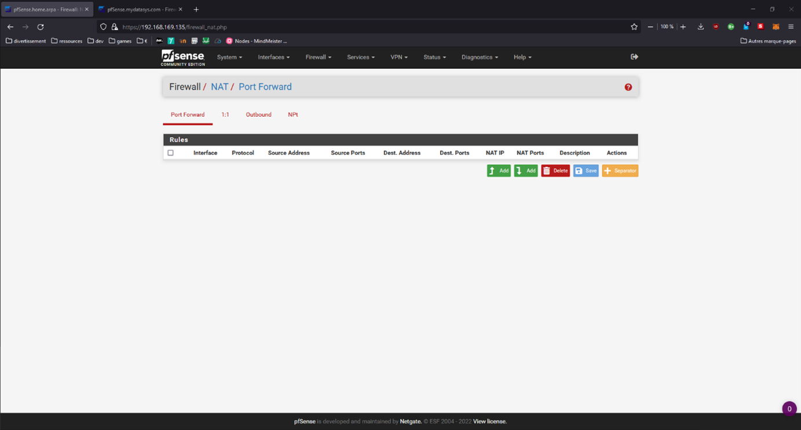
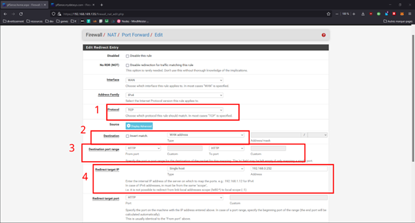
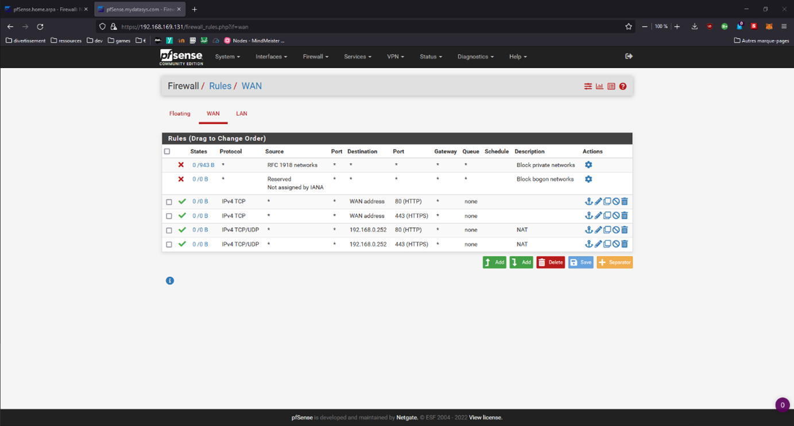

Protection: Gestion NAT
Si vous souhaitez rendre accessible certaine de vos adresses de votre réseau local sur le réseau WAN relié au pare-feu vous devrez créer des règles NAT.
Attention, cette fonctionnalité est à utiliser avec parcimonie puisqu’elle ouvre des connexions directes entre votre réseau local et externe et ainsi vous peut vous exposer à différentes failles de sécurité.
Pour montrer son utilisation nous allons ouvrir l’accès au serveur web depuis le réseau WAN.
Pour commencez rendez vous dans l’onglet Firewall puis NAT

Dans l’onglet « Post Forward » vous pouvez désormais ajouter une nouvelle règle avec le bouton "ADD"

1. Choisir le protocole utilisé
2. Sélectionner WAN address
3. Choisir le port à utiliser pour donner accès à votre site web, ici nous sélectionnons le port http (80)
4. Dans la section « Redirect target IP » nous configurons en premier le type : single host, puis nous renseignons l’ip de notre serveur web
Vous pouvez répéter l’opération avec le port HTTPS (443)
Vous remarquerez qu’une fois ces règles appliquées vous les retrouverez également dans l’onglet Firewall/Rules :
